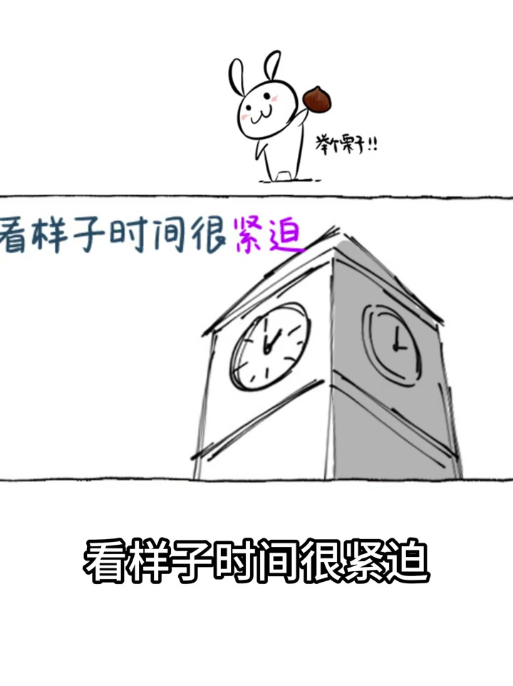
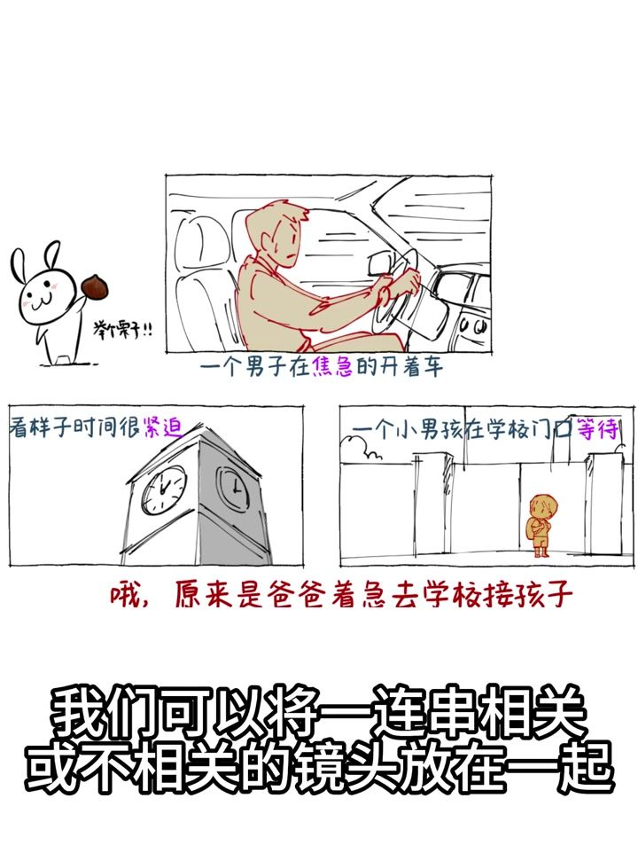

01
中文
一男子着急地开着车，看样子时间很紧迫。
EN
A man drives urgently—clearly pressed for time.
表达提示pressed for time（时间紧迫）
Scene English · 分镜 · 蒙太奇
Storyboard Tips: Montage
🎧 语音讲解
What Is Montage
情境用开车接孩子的例子说明：把相关或不相关的镜头放在一起产生暗喻作用，就是蒙太奇。
一男子着急地开着车，看样子时间很紧迫。
A man drives urgently—clearly pressed for time.
表达提示pressed for time（时间紧迫）
为什么呢？哦，原来是着急接孩子放学。
Why? He's rushing to pick up his child.
表达提示pick up the child（接孩子）
当我们描述一个主题时，可以将一串相关或不相关的镜头放在一起，以产生暗喻的作用。
Describing a theme, you can cut related or unrelated shots together to create metaphor.
表达提示create metaphor（产生暗喻）
这就是蒙太奇。
That's montage.
表达提示montage（蒙太奇）
pressed for time（时间紧迫
pick up the child（接孩子

The Core of Montage Storyboarding: Connect…
情境同样是切换镜头，普通分镜只是展示不同画面，蒙太奇式分镜在画面之间建立关联。
同样是切换镜头，普通分镜只是展示不同画面。
Both cut shots, but plain storyboards just show different views.
表达提示plain storyboards（普通分镜）
蒙太奇式分镜则在画面之间建立关联。
Montage-style boards build connections between shots.
表达提示build connections（建立关联）
可以是视觉上的（相似形状、颜色、动作），或语义上的（因果关系、对比关系）。
Visual (similar shapes, colors, motion) or semantic (cause-effect, contrast).
表达提示visual or semantic（视觉或语义）
观众在看到关联后，会自动脑补中间的故事。
Viewers fill in the missing story once they see the link.
表达提示fill in the story（脑补故事）
plain storyboards（普通分镜
build connections（建立关联

Three Ways to Build Connections
情境相似构图颜色、动作方向一致、意义因果递进，三种方式让观众参与叙事。
第一种：两个镜头中有相似的构图、颜色，切换时产生呼应。
First: similar framing or color in two shots creates a call-back.
表达提示a call-back（呼应）
第二种：上一个镜头的动作方向和下一个镜头一致，形成流动。
Second: matching action direction flows across the cut.
表达提示matching direction（方向一致）
第三种：两个镜头在意义上形成因果递进，观众脑补中间的叙事。
Third: causal progression lets viewers infer the middle.
表达提示causal progression（因果递进）
关联越巧妙，观众的参与感越强，蒙太奇的效果也就越好。
The cleverer the link, the stronger the engagement and the better the montage.
表达提示stronger engagement（参与感更强）
a call-back（呼应
matching direction（方向一致

Common Misconceptions
情境新手以为分镜就是多切几个角度，但没有关联设计就只是多机位记录。
很多新手认为分镜就是多切几个角度。
Many beginners think storyboarding means cutting more angles.
表达提示more angles（更多角度）
但如果没有画面之间的关联设计，切再多角度也只是多机位记录。
Without linking design, extra angles are just multi-cam recording.
表达提示multi-cam recording（多机位记录）
分镜的价值在于每个镜头都在推动叙事或含义的发展。
A board's value is each shot advancing the narrative or meaning.
表达提示advance the narrative（推动叙事）
more angles（更多角度

Pitfalls to Avoid and Practice
情境拍前画分镜表，练习视觉关联与动作关联，控制单镜头时长。
拍之前先画一个简单的分镜表：每个镜头要传达什么信息、和上下镜头的关联是什么。
Sketch a board first: what each shot conveys and its link to neighbors.
表达提示a storyboard table（分镜表）
练习视觉关联：在两个场景中寻找形状、颜色相似的物体，让它们成为切镜的连接点。
Practice visual links: find shape- or color-similar objects as cut points.
表达提示cut points（切镜连接点）
练习动作关联：拍摄一个人从左跑出的镜头，下一个镜头让他从右跑入。
Practice motion links: run left in one shot, run in right in the next.
表达提示motion links（动作关联）
控制单镜头时长：一个镜头超过几秒还没新信息，观众就会开始走神。
Control shot length: past a few seconds without new info, viewers drift.
表达提示viewers drift（观众走神）
a storyboard table（分镜表
cut points（切镜连接点

Where It Applies
情境分镜关联需要前期规划，适合叙事类短视频，不适合直播和一镜到底。
分镜关联需要前期规划，不是后期能完全补救的。
Linking needs pre-production planning; post can't fully save it.
表达提示pre-production（前期规划）
适合叙事类短视频、短片创作。
It fits narrative short videos and short-film creation.
表达提示narrative shorts（叙事类短片）
直播类、单镜头长记录、纯教程的一镜到底，则不太适用。
Live streams, single-shot records, and one-take tutorials need it less.
表达提示one-take tutorials（一镜到底）
pre-production（前期规划
narrative shorts（叙事类短片
说蒙太奇定义
说关联核心
说三种方式
说分镜表
说适用范围
多角度不等于分镜。
无关联观众会割裂。
强拉关联更差。
关联靠前期规划。
声音也能做剪接点。